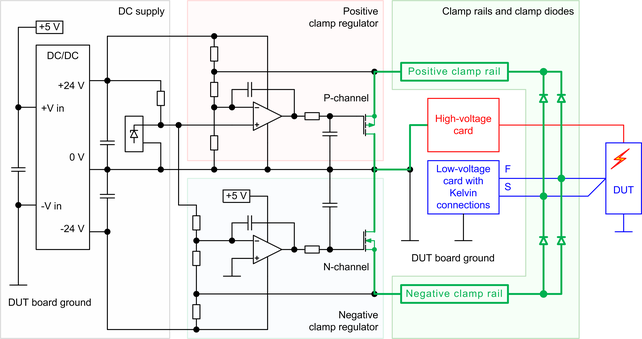

HV protection - Recommended protection circuitry
The recommended high-voltage protection circuitry for the production mode consists of the clamp diodes, the clamp regulators, and a DC supply with an additional voltage reference.
Circuit diagram
The diagram below shows the major components of the high-voltage protection circuit:
- Clamp diodes with clamp rails
- Positive and negative clamp regulator
- DC supply with the voltage reference
The high-voltage protection circuitry is referenced to the common DUT board ground and discharges the high-voltage pulses to the DUT board ground and the ground reference of the high-voltage card via the clamp diodes, the clamp rails, and the clamp regulators.

The diagram above shows how the energy of the high-voltage pulses is discharged via the clamp diodes, the clamp rails, the clamp regulators and the ground connection to the high-voltage card. Low-impedance traces must be used for the complete path that is marked green.
Clamp diodes and clamp rails
The clamp diodes connect the protected lines of the low-voltage test head cards to the positive or negative clamp rails. One diode is required per protected line and per connected clamp rail. For more information refer to the detailed description of the clamp diodes.
The clamp rails connect the clamp diodes to the clamp regulators. Each clamp rail is common to all protected lines of a site or DUT board that use the same clamp voltage level.
Clamp regulators
The circuit shown above uses operational amplifiers and FETs to keep the voltage at the clamp rail at a defined level and to absorb the energy of high-voltage pulses. A P-channel FET is used for the positive clamp regulator and an N-channel FET is used for the negative clamp regulator. The drain pin of the FETs is connected to the ground signal to minimize the response time of circuit. The clamp voltage level is determined by the scaling factor of a pair of resistors. One more resistor is used to determine the bias current of the circuit. For more information refer to the detailed description of the clamp regulator.
DC supply
A dual-output DC-to-DC converter supplies the clamp regulators for the positive and negative clamp rails. The supply additionally provides the two reference voltages +5.0 V and +2.5 V for the clamp regulators. For more information refer to the detailed description of the DC supply.
Current consumption
The 24 V current consumption of the circuitry above is about 4.5 mA for each positive or negative clamp regulator. This results in a required current of about 30 mA at the +5 V input of the DC-to-DC converter if an efficiency of 75 % is assumed.
Functional changes
- Introduced in SmarTest 7.3.1
- SmarTest 7.4.3: Protection circuitry optimized.